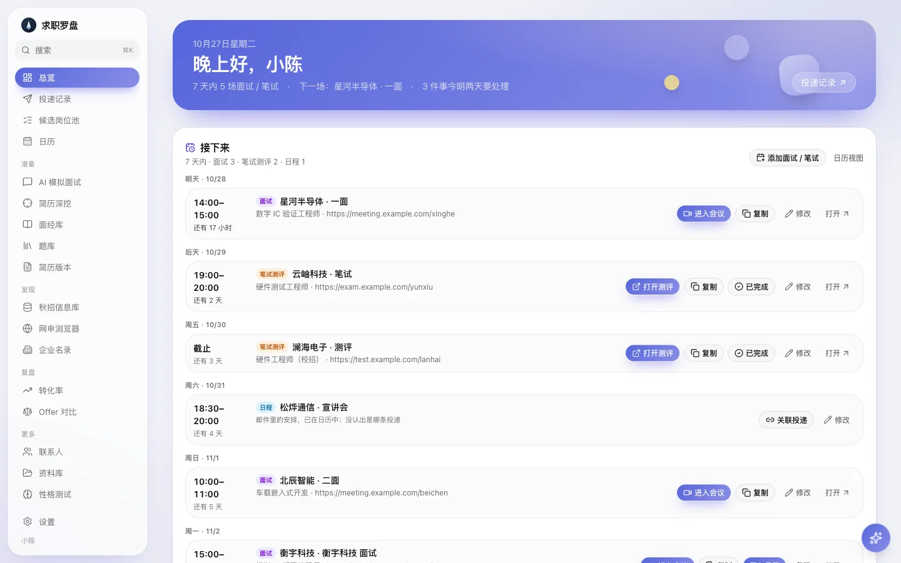
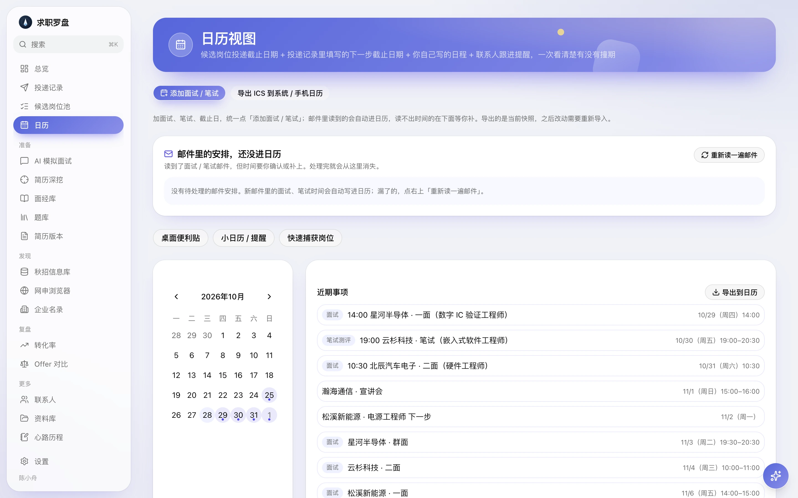
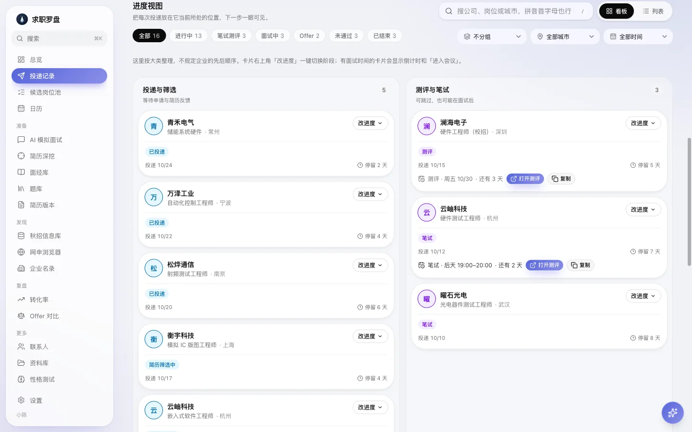
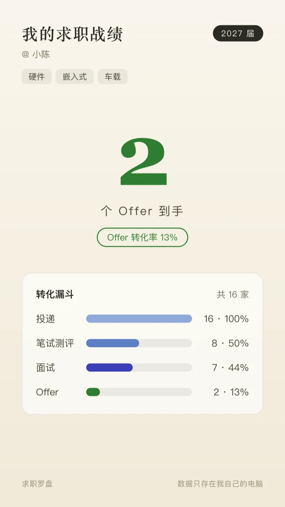
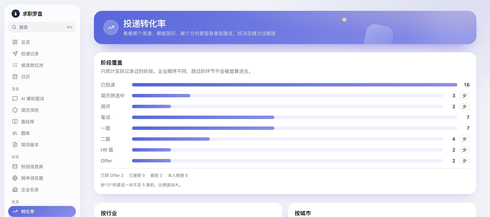

给秋招的桌面软件 · Mac / Windows
投递、笔试、面试、邮件、网申，
投递、笔试、面试、邮件、网申，
一个软件替你盯着
读邮件自动把面试和笔试排进日历，网申表单一键填好，每次进展都记在一处。数据只存在你自己的电脑上。

秋招投到后面，最怕这三件事
投了几十家，哪家到哪一步，自己都说不清。
面试邀请埋在邮箱里，看漏一封，机会就没了。
每家的网申表单一模一样地重填，填到手酸。

读邮件
面试邀请，不用再自己抄进日历
绑上你的邮箱，软件会读招聘邮件，把面试、笔试、测评的时间排进日历，并更新那条投递的进度。
- HTML 排版的邮件也能读，笔试时间、测评截止、会议链接都认得出
- 读不出具体时间的，会放在「还没进日历」里等你补一下
- 每一次自动更新都能撤销，不会悄悄改掉你自己填的

投递记录
每家公司走到哪一步，一眼看清
看板按阶段把投递排开，有面试时间的卡片直接显示倒计时和「进入会议」。
- 按城市、公司、行业、时间分组和筛选，搜「杭州 测试」就够
- 在网申浏览器里点「记为已投递」，自动带上城市和岗位
- 一键改进度，面试、笔试、offer 的历史都留着
网申浏览器
网申表单，填一次就够
软件里自带一个像 Chrome 一样的浏览器。打开企业的网申页，点「一键填写」，基本信息、教育经历、实习、项目、奖项会按你的资料填好。
- 支持多数校招系统的分页表单和树形城市下拉
- 简历里没有的信息不乱填，标成「待手填」交给你
- 开放题可以让小欧起草，你看过再点「填进这一栏」
- 也有 Chrome 插件，在你平时用的浏览器里同样能填
- 打开网申页在软件里的浏览器打开企业的招聘官网，登录、进到表单
- 点「一键填写」按你的网申资料和简历填好，已经填了的内容默认保留
- 核对「待手填」没有对应资料的栏目被标出来，补完就能提交

战绩卡
一键生成你的求职战绩
把投递、面试、Offer 的数字做成一张竖版图片，发朋友圈或小红书。可以只放数字，也可以带上转化漏斗和投递行业。
- 昵称、届别、投递方向都可以不填
- 公司名默认不写，想晒 Offer 再勾上
- 图片只保存在你电脑的「下载」文件夹里

复盘
看清卡在哪一关
只统计真正记录过的阶段，跳过的环节不会被虚算进去。哪一关过得少，样本太小不足以下结论，也会直接标出来。
- Offer 对比：薪资、通勤、加班一起比，不只看月薪
- 每周复盘：这周投了多少、卡在哪、下周先做什么
还有这些
小欧助手每天的简报、每周的复盘，也能帮你起草开放题的回答。要你自己配置的 AI Key。
AI 模拟面试按岗位出题、打分、给更好的答法；简历深挖会顺着你的项目一路追问。
面经库和题库面试记录自动整理成题目，复盘时能看到每一类题答得怎么样。
秋招信息库群里的大表格导入进来，筛完把想投的放进候选池，不用来回翻。
简历体检与匹配上传简历，看和每个岗位的匹配度，也能按岗位生成一份定制版本。
桌面提醒小日历、便利贴和提醒邮件，面试前不会忘。日历能导出到手机。
你的数据，留在你自己的电脑上
投递记录、简历、邮件结果都存在本机，没有注册，没有云端账号。
用 AI 功能时，相关内容只会发给你自己配置的 AI 服务商，用的是你自己的 Key。
支持定时自动备份，换电脑时一键导出再导入。
源码公开，装之前可以先看看它做了什么。
下载求职罗盘
免费使用
Mac：打开 dmg，把软件拖进「应用程序」再打开。首次打开如果提示无法验证开发者，到「系统设置 → 隐私与安全性」里点「仍要打开」。目前只有 Apple 芯片（M 系列）的版本。
Windows：双击安装包即可。如果出现蓝色的 SmartScreen 提示，点「更多信息 → 仍要运行」。
更新：装好以后，有新版本时软件会自己提示，点一下就升级，数据不会丢。